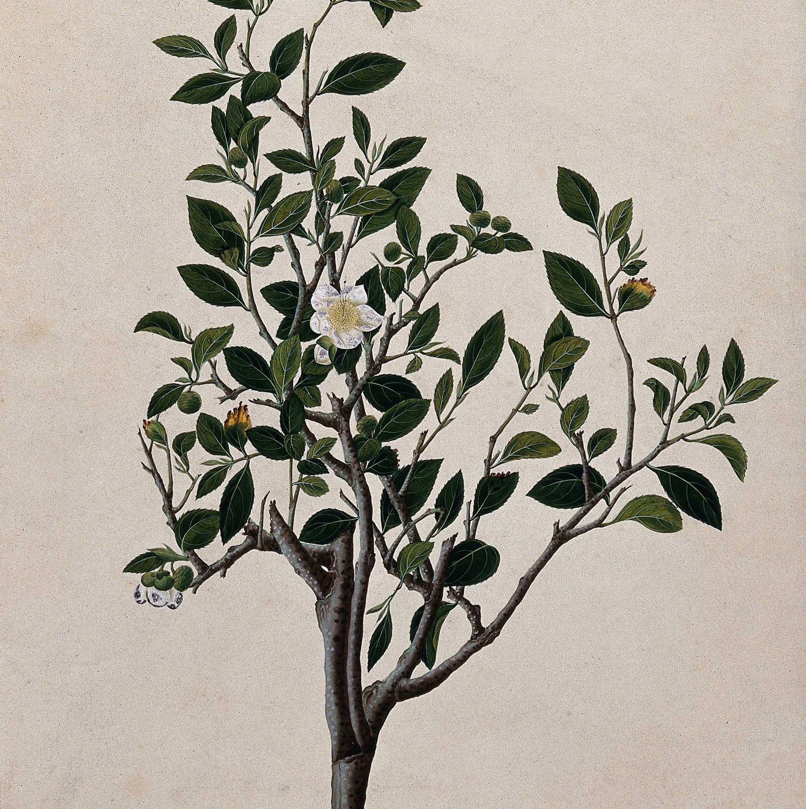

What's in a cup of tea?
Tea can be found in almost every household across the world. The camellia tea plant, which was originally only cultivated in China thousands of years ago is now close to the second most consumed beverage on the planet. It accompanies every part of life, from every day breakfast, to formal social occasions or simple afternoon get-togethers. But it is not just remarkable in its prevalence, but also its versatility. By simply altering the manufacturing process, changing the amount of oxidation, a single leaf turns into a variety. With this variety, different cultures from all across the globe were able to take the leaf and adapt it to their own needs and tastes, taking care and pride in their own preparation styles and knowing in their own right, theirs is the best way to make tea.
The British like their tea simple, served hot, with a splash of milk, and a side of tiny sandwiches, giving way to the popular tradition of afternoon tea. While countries like India favour a sweeter, spiced tea, where loose tea leaves are boiled in milk together with warm spices like cardamon and nutmeg. Kenya’s tea culture is heavily influenced by both the British and the Indians and so both preparation styles can be found there. In Japan, tea is ground into a fine powder called matcha and is found at the centre of the Zen Buddhist Japanese Tea Ceremony. While in Bhutan they serve their tea salty, flavoured by mixing in yak butter. From variety emerge cultures and traditions that, while different, further embed tea into our global identity.
Art of Tea is a prototype for a library of digital resources that traces not just the complex history of the tea leaf and its ties to shifting global powers, global trade, wars and colonialism, but also the different ways it has become interwoven into so many cultures across the world.
The project is built on the architecture of IIIF, a framework for sharing and creating interoperable digital resources, accessible across the internet. On top of this is the ArTea graph which conceptually maps all the items in the library to the various aspects of tea, linked to the subject authority files of the Library of Congress. The final goal is to create a digital library which is fully semantically interconnected, linking not just the subjects of the items but also the entities within them, aided by IIF’s annotation and search services. In this way the library will not just aid in the study of the history and culture of tea, but also be a digital semantic reflection of the longlasting influence of the simple tea leaf.

There is something in the nature of tea that leads us into a world of quiet contemplation of life.
Lin Yutang, The Importance of Living
Our Collection
- All
- Books
- Art